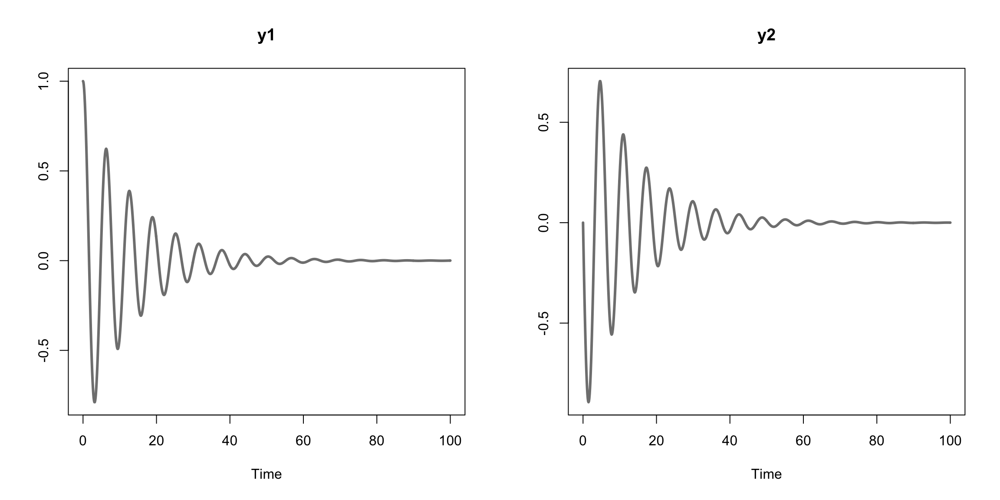
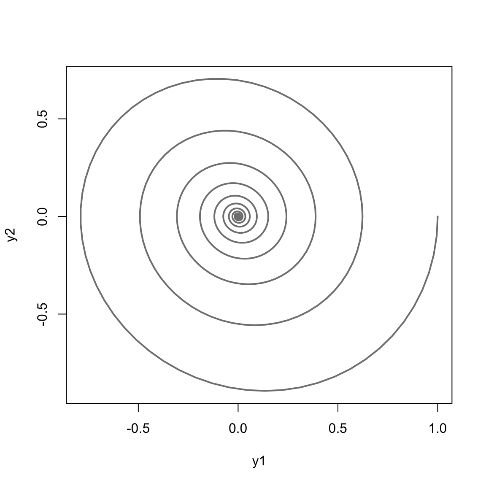
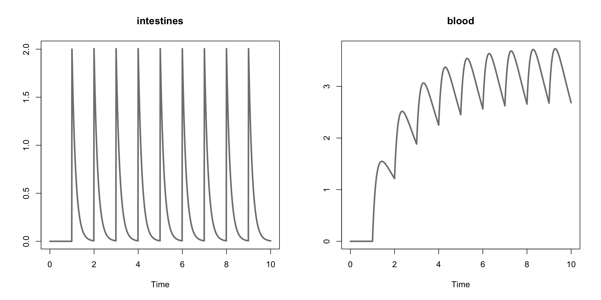
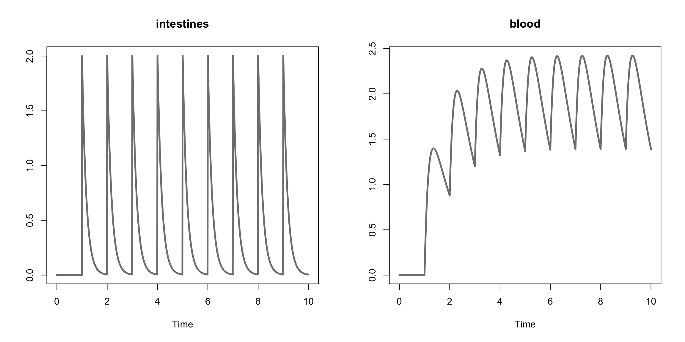

5 Examples
5.1 Simple Harmonic Oscillator
The equations that govern a harmonic oscillator are the following,
\[\begin{align*} \frac{d}{dt}y_1 &= y_2 \\ \frac{d}{dt}y_2 &= - y_1-\theta \cdot y_2 \end{align*}\]where \(y_1\), \(y_2\) are state variables and \(\theta\) is a parameter in this model. The text file representation of the model is provided below.
********** MODEL NAME
Harmonic Oscillator
********** MODEL NOTES
Harmonic Oscillator ODE example.
********** MODEL STATES
d/dt(y1) = y2
d/dt(y2) = - y1 - theta * y2
y1(0) = 1
y2(0) = 0
********** MODEL PARAMETERS
theta = 0.15
********** MODEL VARIABLES
********** MODEL REACTIONS
********** MODEL FUNCTIONS
********** MODEL EVENTSCompiling and simulating the model.
sho_model <- create_model(system.file("examples/sho.txt", package="AZRsim"))
sho_sim <- simulate(sho_model, seq(0, 100, by=0.1))
head(sho_sim)
#> TIME y1 y2
#> 1 0.0 1.000 0.0000
#> 2 0.1 0.995 -0.0991
#> 3 0.2 0.980 -0.1957
#> 4 0.3 0.956 -0.2890
#> 5 0.4 0.923 -0.3780
#> 6 0.5 0.881 -0.4619Plotting variables as a function of time.
plot(sho_sim, col = "#808080", lwd = 3)
Plotting the variables as a function of each other.
plot(sho_sim[,"y1"], sho_sim[,"y2"], type = "l", col = "#808080", lwd = 2, xlab = "y1", ylab = "y2")
5.2 Two Compartment Model
Here we consider a simple two compartment model where, for example, we model the concentration of an oral drug in the intestines and in the blood. The ODE system takes the following form,
\[\begin{align*} \frac{d}{dt}y_1 &= -a \cdot y_1 + u_t \\ \frac{d}{dt}y_2 &= a \cdot y_1 - b \cdot y_2 \end{align*}\]where \(y_1\) denotes the concetration of the drug the intenstine, \(y_2\) denotes the concentration of the drug in the blood, \(a\) and \(b\) are parameters, and \(u_t\) denotes the uptake of the drug at time period \(t\).
The text file representation of the model above provided below.
********** MODEL NAME
Simple Two Compartment Dosing Model
********** MODEL NOTES
A simple two compartment dosing model where
ten equally spaced doses are given to the subject.
********** MODEL STATES
d/dt(y1) = -a * y1
d/dt(y2) = a * y1 - b * y2
y1(0) = 0
y2(0) = 0
********** MODEL PARAMETERS
a = 6
b = 0.6
********** MODEL VARIABLES
********** MODEL REACTIONS
********** MODEL FUNCTIONS
********** MODEL EVENTS
% adding 40 units at a specified time step
event1 = eq(time, 1), y1, y1+2
event2 = eq(time, 2), y1, y1+2
event3 = eq(time, 3), y1, y1+2
event4 = eq(time, 4), y1, y1+2
event5 = eq(time, 5), y1, y1+2
event6 = eq(time, 6), y1, y1+2
event7 = eq(time, 7), y1, y1+2
event8 = eq(time, 8), y1, y1+2
event9 = eq(time, 9), y1, y1+2Below the model is compiled and simulated and the 10 initial and final values are presented.
two_cpt <- create_model(system.file("examples/two_cpt.txt", package="AZRsim"))
#> Warning in check_azrmod(model): check_azrmod: AZRmodel contains parameter
#> names with a single character name. Try to avoid that if you plan to use
#> NONMEM or MONOLIX
two_cpt_simulation <- simulate(two_cpt, simtime = 10)
head(two_cpt_simulation, n = 10)
#> TIME y1 y2
#> 1 0.00 0 0
#> 2 0.01 0 0
#> 3 0.02 0 0
#> 4 0.03 0 0
#> 5 0.04 0 0
#> 6 0.05 0 0
#> 7 0.06 0 0
#> 8 0.07 0 0
#> 9 0.08 0 0
#> 10 0.09 0 0
tail(two_cpt_simulation, n = 10)
#> TIME y1 y2
#> 992 9.91 0.00853 2.83
#> 993 9.92 0.00803 2.81
#> 994 9.93 0.00757 2.80
#> 995 9.94 0.00713 2.78
#> 996 9.95 0.00671 2.77
#> 997 9.96 0.00632 2.75
#> 998 9.97 0.00595 2.73
#> 999 9.98 0.00561 2.72
#> 1000 9.99 0.00528 2.70
#> 1001 10.00 0.00497 2.69Using the plot generic we can plot the simulation to visualize the concentration of the drug in both compartments over time.
plot(two_cpt_simulation, col = "#808080", lwd = 3, plot_names = c("intestines", "blood"))
Below we simulate the model with a different parameter value for \(b\).
two_cpt_simulation2 <- simulate(two_cpt, simtime = 10, parameters = c("a" = 6, "b" = 1))
plot(two_cpt_simulation2, col = "#808080", lwd = 3, plot_names = c("intestines", "blood"))